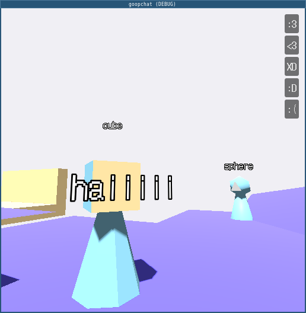
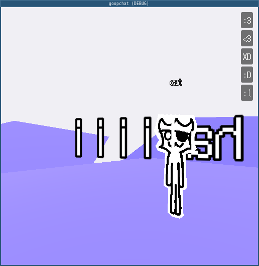
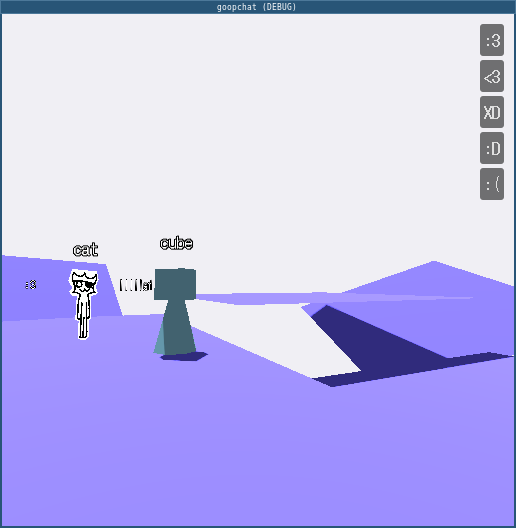

guys i have to leave in like 5 mins
Enumerating objects: 6, done.
Counting objects: 100% (6/6), done.
Delta compression using up to 12 threads
Compressing objects: 100% (4/4), done.
Writing objects: 100% (4/4), 10.89 KiB | 5.45 MiB/s, done.
Total 4 (delta 2), reused 0 (delta 0), pack-reused 0
remote: Resolving deltas: 100% (2/2), completed with 2 local objects.
remote: This repository moved. Please use the new location:
remote: ▒▒▒▒▒▒▒▒▒▒▒▒▒▒▒▒▒▒▒▒▒▒▒▒▒▒▒▒▒▒▒▒
To ▒▒▒▒▒▒▒▒▒▒▒▒▒▒▒▒▒▒▒▒▒▒▒
e77195c..b9f7715 v2 -> v2
ffmpreg
i'm inside your phone help
one day we'll be allowed to fly
but for now we pretend to walk
| goop chat | interactive 3d chatroom |



|
| tooll3 demos | live audio-reactive visuals | wip |
| glitch art | databending, datamoshing, etc. |
todo: subpage resources: |
| music | wip | wip |